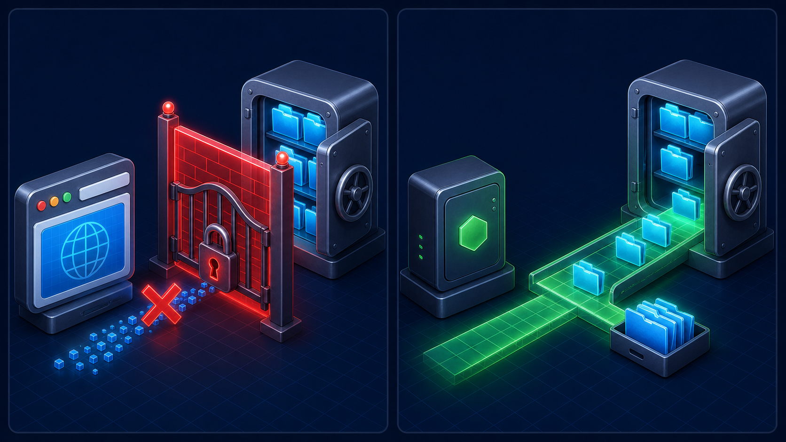
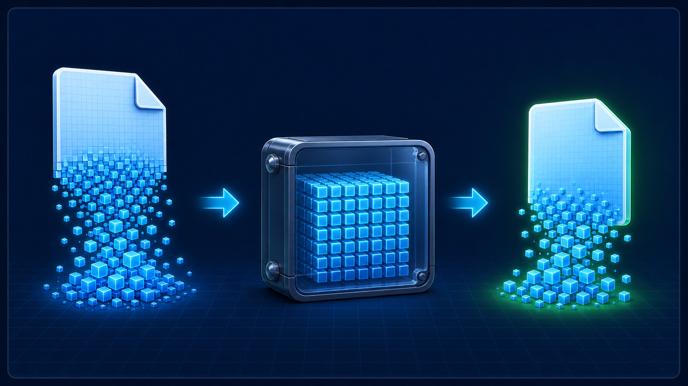
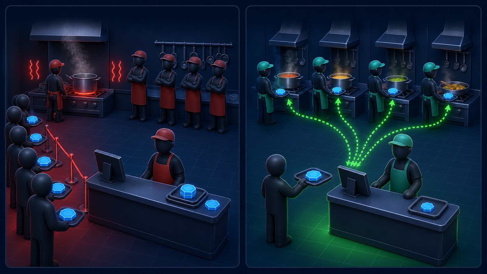
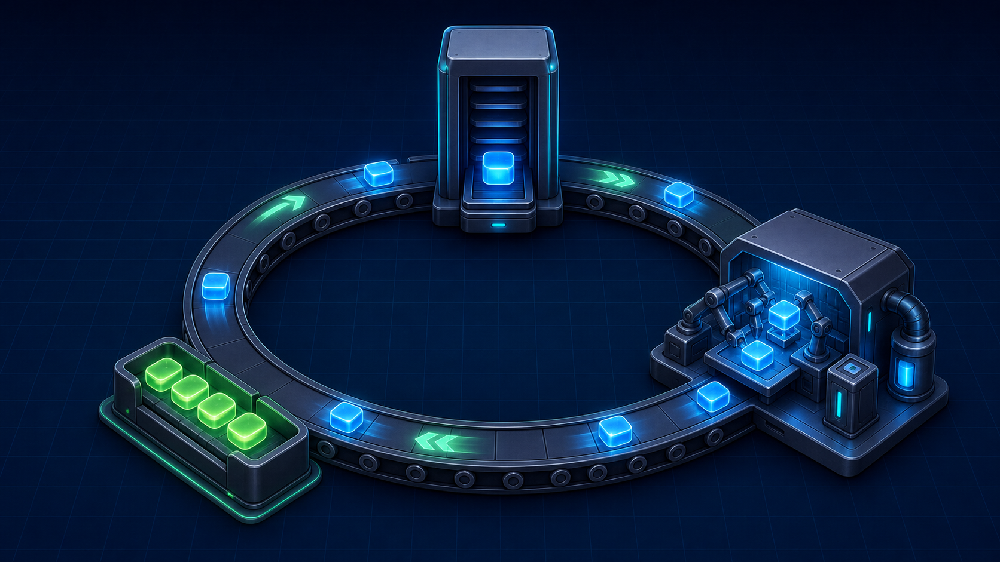

01
서버의 탄생
4편 · 52분 — 설치부터 노드의 심장까지
1-1
노드 설치하고 첫 코드 실행하기
10분 · 대부분 라이브 코딩개념 설명 없이 바로 손을 움직인다. 오늘의 유일한 목표: 브라우저 없이 자바스크립트를 실행해본다.
라이브 코딩
설치하고 첫 실행까지
- nodejs.org에서 LTS 설치 (윈도·맥 각각) →
node -v로 확인 - VS Code 설치하고 작업 폴더 열기
- 터미널에서
node→ REPL 진입,1+1·console.log('hi') .exit후helloworld.js작성 →node helloworld.js
결과 → 터미널에 원하는 값이 출력된다. “브라우저 콘솔이랑 똑같은데, 지금 브라우저가 없죠.”
1-1 · 오늘의 개념
브라우저 없이
자바스크립트가 돌아간다.
버전 관리·npm 업데이트는 강의 노트 N-3으로. 지금 필요 없다. 다음 시간, 바로 서버 만듭니다.
1-2
서버 만들기 + 방금 만든 게 뭔지
14분 · 라이브 코딩 + 개념열 줄이 안 되는 서버를 먼저 띄우고, 그다음 “방금 만든 게 뭐였는지”에 이름표를 붙인다.
라이브 코딩
30분 만에 서버 (실제론 10줄)
server1.js—http.createServer로 응답 만들기node server1.js→ 브라우저localhost:8080접속- 같은 와이파이에서 휴대폰으로 내부 IP 접속
node --watch로 자동 재시작 세팅
결과 → 브라우저에 “Hello Node!”. 휴대폰에서도 뜬다 — 내 컴퓨터가 지금 서버.
1-2 · 코드
이게 서버의 전부
const http = require('http'); const server = http.createServer((req, res) => { res.writeHead(200, { 'Content-Type': 'text/html; charset=utf-8' }); res.end('<h1>Hello Node!</h1>'); }); server.listen(8080, () => console.log('8080 대기 중'));
요청이 오면, 응답을 준다. 네이버도 유튜브도 본질은 이것 — 규모가 다를 뿐.
1-2 · 개념
클라이언트 ↔ 서버
클라이언트브라우저·앱·다른 서버
요청 →← 응답
서버요청을 받아 응답
- 주소창 입력 = 요청, 화면에 뜬 내용 = 응답
- 휴대폰으로 접속됐듯, 클라이언트는 누구든 될 수 있다
1-2 · 개념
노드 = 자바스크립트 런타임
“Chrome V8 엔진으로 빌드된
자바스크립트 런타임입니다.”
- 런타임 = 자바스크립트 실행기. 브라우저도, 노드도 런타임
- 그래서 1-1처럼 브라우저 없이 돈다. 공식 소개에 “서버”가 없는 이유 — 서버만 만드는 게 아니라서
1-3
HTML 파일 제공하기 — fs · 버퍼 · 스트림
15분 · 라이브 코딩문자열 말고 진짜 HTML 파일을 보낸다. 노드가 파일을 읽어야 하니 오늘의 주인공은 fs.
라이브 코딩
파일을 읽어 응답하기
server2.html작성 →fs.readFile로 읽어res.end- 실행 위치를 바꿔 경로 에러를 일부러 겪기
path.join(__dirname, ...)으로 해결 — “경로 문제는 계속 만난다”- 한글 깨짐 →
Content-Type에charset=utf-8
결과 → 브라우저에 HTML 파일이 그대로 렌더링. 경로·인코딩 함정 두 개를 몸으로 익힘.
1-3 · 개념
fs — 노드가 브라우저와 갈리는 지점
- 브라우저 JS는 보안 때문에 내 파일을 못 읽는다
- 노드는 읽는다. 서버니까. →
fs(파일 시스템) 모듈 __dirname= 현재 파일이 있는 폴더의 절대 경로

1-3 · 개념
글자가 아니라 버퍼가 나온다
fs.readFile('server2.html', (err, data) => { console.log(data); // <Buffer 3c 21 44 4f 43 ...> console.log(data.toString()); // <!DOCTYPE html> ... });
- 컴퓨터는 파일을 글자가 아니라 바이트 덩어리로 읽는다
- 그 덩어리를 담아두는 그릇이 버퍼 →
toString()해야 글자

라이브 코딩
큰 파일을 보내보면
- 수백 MB 더미 파일을
readFile로 응답 → 메모리 사용량이 확 튀는 것 확인 fs.createReadStream(...).pipe(res)로 교체- 메모리가 평평하게 유지되는 것 확인
결과 → 같은 파일, 같은 응답. 그런데 메모리 그래프가 완전히 다르다.
1-3 · 개념

버퍼 vs 스트림
✗ readFile — 파일 전체를 메모리에 적재
✓ 스트림 — 작은 조각만 두고 계속 전송
AI가 답변을 한 글자씩 보내는 것도 같은 원리 —
조각조각 흘려보내면 메모리가 일정하다.
1-3 · 떡밥
다음 시간, 이 서버를
코드 한 줄로 멈추게 만든다.
그게 노드 이해의 열쇠.
1-4
멈춰버린 서버 — 이벤트 루프·논블로킹
16분 · 연출 + 개념 (앵커 회차)서버를 일부러 멈춰 보이고, 그 이유로 싱글 스레드·논블로킹·이벤트 루프를 한 번에 설명한다.
라이브 코딩 · 연출
서버를 멈춰 보인다
readFile→readFileSync로 변경. “더 안전해 보이죠?” (일부러 편들기)- 라우트 하나에 3초짜리 동기 작업 삽입
- 브라우저 탭 2개: 무거운 요청 옆에서 가벼운 요청도 같이 멈추는 것 확인
readFile로 되돌리고 재실험 → 가벼운 요청 즉시 응답
결과 → 네트워크 탭에서 탭2의 대기 시간을 눈으로. “손님 100명이면 100명이 다 멈춘 겁니다.”
1-4 · 코드 비교
코드 한 줄이 만든 차이
✗ 동기 — 다른 요청까지 멈춤
const data = fs.readFileSync('big.html'); res.end(data); // 읽는 3초 동안 // 서버 전체가 정지
✓ 비동기 — 다른 요청은 즉시
fs.readFile('big.html', (err, data) => { res.end(data); }); // 읽는 동안 다른 주문 // 계속 처리
1-4 · 개념
Node.js는 카운터 한 명, 요리사는 여러 명인 주방

✗ 동기 — 카운터가 조리 완료까지 기다림
✓ 비동기 — 요리사에게 맡기고 다음 주문 접수
핵심 → Node.js가 빠른 이유는 혼자 다 해서가 아니라,
기다리지 않고 일을 맡기기 때문이다.
1-4 · 개념
이벤트 루프

콜 스택 → I/O 맡기기 → 태스크 큐 → 다시 콜 스택
console.log('1'); setTimeout(() => console.log('2'), 0); // 큐로 미뤄짐 console.log('3'); // 출력 순서 → 1, 3, 2
콜백 = “이벤트가 오면 실행해줘”라는 예약 — 클릭 리스너와 같은 구조.
1-4 · 정리
노드는 V8 기반 JS 런타임,
싱글 스레드지만 이벤트 루프 기반 논블로킹 I/O라
동시 요청에 강하다.
면접 단골. I/O엔 강하고 CPU 계산엔 약함 → 해결은 노트 N-4. 다음 섹션부턴 다시 손이 바빠진다.